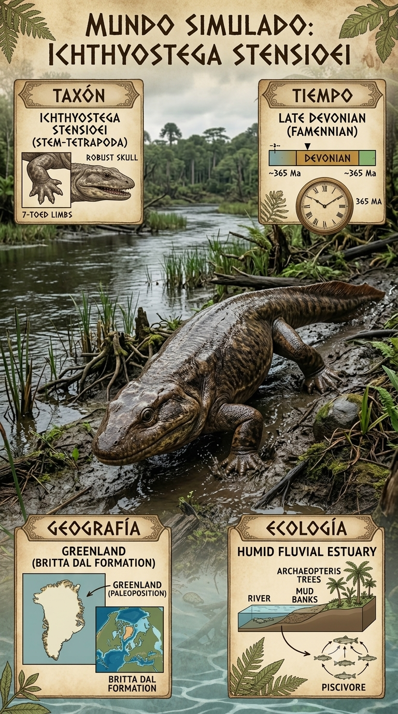
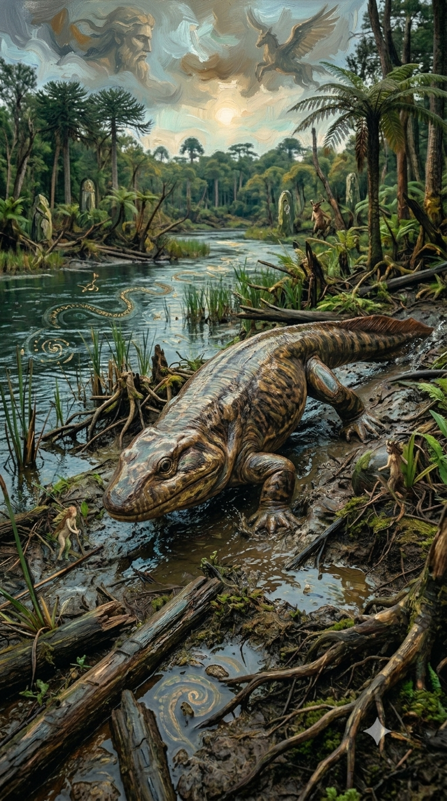
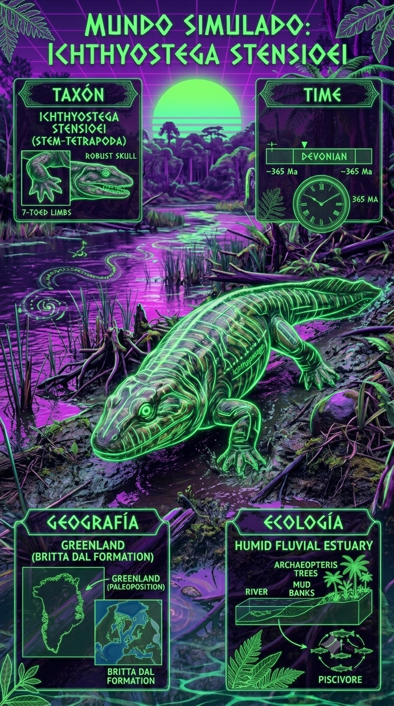

Paleoficha de Ichthyostega



Periodo: Devónico Superior
Edad: Hace aproximadamente 365 millones de años.
Dieta: Piscívoro y depredador de orilla.
Distribución: Formación Celsius Bjerg, Groenlandia (Laurussia).
TAXÓN:
Ichthyostega stensioei
CLADO: Stegocephalia (Tetrapodomorpha)
DIETA: Piscívoro y depredador de orilla
TAMAÑO: Aproximadamente 1,5 metros de longitud
LOCOMOCIÓN: Semiacuática; uso de extremidades robustas para arrastre en aguas poco profundas
TIEMPO:
Devónico Superior (Fameniense), aproximadamente 365 millones de años.
GEOGRAFÍA:
Formación Celsius Bjerg, Groenlandia (Laurussia). Sistema de deltas y llanuras aluviales de alta latitud. Ambiente paleoecológico de delta fluvial con canales trenzados y vegetación costera primitiva.
ECOLOGÍA:
Bosques tempranos de Archaeopteris y licófitos. Fauna asociada con Acanthostega y peces con aletas lobuladas (osteolepiformes). Nicho como depredador de aguas someras con capacidad para desplazarse sobre el sustrato emergido. Competencia con otros tetrápodos primitivos por los recursos de ribera.
CLIMA:
Wm3 (Húmedo). Condiciones templadas a cálidas en un ambiente deltaico.
ESTADO ECOLÓGICO:
Transicional. Representa una adaptación crítica en la historia evolutiva hacia la vida terrestre.
Vídeo PalEntropía:
▶ Ver Short en YouTube